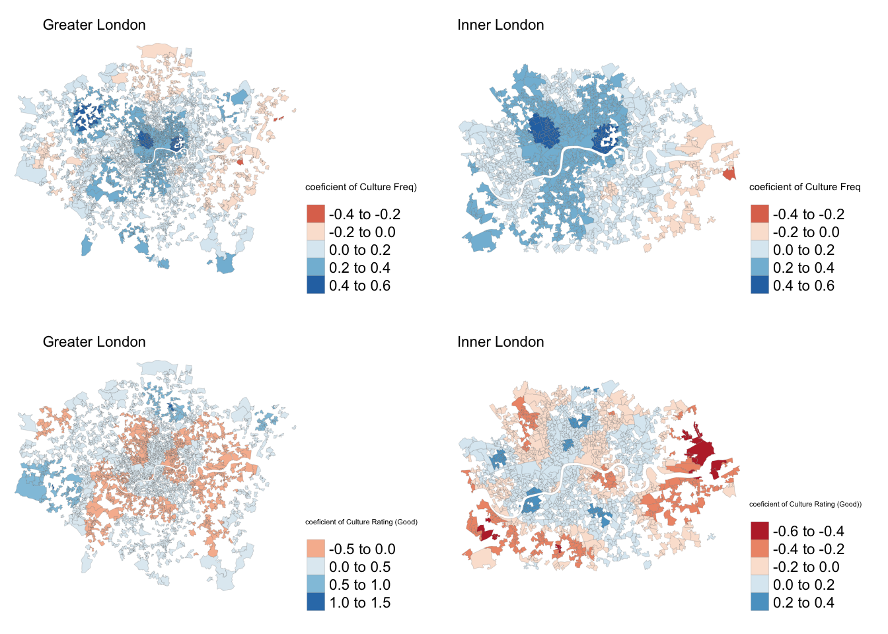

Chapter 6 Regression
Now we are going to runa regression on
#----load all the libraries needed
# load in libraries
library(tidyverse)
library(scales)
library(lubridate)
library(ggridges)
library(gridExtra)
#regression
library(corrplot)
library(rgdal)
library(spdep)
library(car)
#----data visualization packages - https://serialmentor.com/dataviz/geospatial-data.html
#install.packages("remotes")
#install.packages("devtools")
library(remotes)
#install.packages("cowplot")
#devtools::install_github("wilkelab/cowplot")
library(cowplot)
#install.packages("colorspace")
library(colorspace)
#devtools::install_github("clauswilke/colorblindr")
#https://rdrr.io/github/clauswilke/dviz.supp/
#devtools::install_github("clauswilke/dviz.supp")
library(dviz.supp)
#https://cran.r-project.org/web/packages/jtools/vignettes/summ.html
#install.packages('jtools')
library(jtools)
options(scipen = 999)6.1 Gloabl Regression Models
#---read InnerOuter variable as a factor
londonLSOAProfiles$InnerOuter <- as.factor(londonLSOAProfiles$InnerOuter)
#---SUPPLY SIDE MODEL
modelFreq <- lm(log(`airbnb_freq`) ~
`bame_p` +
log(`young_p`) +
`nonUK` +
`education` +
`income` +
`house_mortg` +
`house_price` +
log(culture_freq) +
#log(culture_rating) +
`culture_rating_good` +
`culture_reviews_popular` +
`InnerOuter`,
data = londonLSOAProfiles, na.action=na.exclude)
#---DEMAND SIDE MODEL
modelReviews <- lm(log(`airbnb_no_reviews`) ~
`bame_p` +
log(`young_p`) +
`nonUK` +
`education` +
`employees` +
log(`income`) +
`house_mortg` +
`house_price` +
log(`culture_freq`) +
`culture_rating_good` +
`culture_reviews_popular` +
`InnerOuter`,
data = londonLSOAProfiles, na.action=na.exclude)
#---AIRBNB PRICE MODEL
modelPrice <- lm(log(`airbnb_price`) ~
`bame_p` +
`nonUK` +
`education` +
`employees` +
`income` +
`house_mortg` +
`house_price` +
log(culture_freq) +
`culture_rating_good` +
`culture_reviews_popular` +
`InnerOuter`,
data = londonLSOAProfiles, na.action=na.exclude)Dudas et al said remove all variables where vif is above 5
print(vif(modelFreq))## bame_p log(young_p) nonUK
## 4.54 2.69 4.06
## education income house_mortg
## 4.98 6.79 2.97
## house_price log(culture_freq) culture_rating_good
## 2.76 2.56 1.04
## culture_reviews_popular InnerOuter
## 1.10 2.02print(vif(modelReviews))## bame_p log(young_p) nonUK
## 4.89 2.73 4.07
## education employees log(income)
## 8.06 3.78 8.65
## house_mortg house_price log(culture_freq)
## 3.85 2.56 2.56
## culture_rating_good culture_reviews_popular InnerOuter
## 1.05 1.10 2.04print(vif(modelPrice))## bame_p nonUK education
## 4.81 4.00 6.72
## employees income house_mortg
## 3.79 6.55 3.50
## house_price log(culture_freq) culture_rating_good
## 2.80 1.81 1.04
## culture_reviews_popular InnerOuter
## 1.07 1.93Run the regression again without the high vif variable and insignificant variables
#---SUPPLY SIDE MODEL
modelFreq <- lm(log(`airbnb_freq`) ~
`bame_p` +
log(`young_p`) +
`nonUK` +
`education` +
`house_mortg` +
`house_price` +
log(culture_freq) +
`culture_rating_good` +
`InnerOuter`,
data = londonLSOAProfiles, na.action=na.exclude)
#---DEMAND SIDE MODEL
modelReviews <- lm(log(`airbnb_no_reviews`) ~
`bame_p` +
log(`young_p`) +
`nonUK` +
`employees` +
`house_mortg` +
`house_price` +
log(`culture_freq`) +
`culture_rating_good` +
`InnerOuter`,
data = londonLSOAProfiles, na.action=na.exclude)
#---AIRBNB PRICE MODEL
modelPrice <- lm(log(`airbnb_price`) ~
`bame_p` +
`nonUK` +
`employees` +
`house_mortg` +
`house_price` +
log(culture_freq) +
`culture_rating_good` +
`InnerOuter`,
data = londonLSOAProfiles, na.action=na.exclude)print(vif(modelFreq))## bame_p log(young_p) nonUK education
## 4.49 2.48 4.03 2.62
## house_mortg house_price log(culture_freq) culture_rating_good
## 2.62 1.79 2.52 1.04
## InnerOuter
## 2.00print(vif(modelReviews))## bame_p log(young_p) nonUK employees
## 4.31 2.46 3.55 2.33
## house_mortg house_price log(culture_freq) culture_rating_good
## 3.08 1.77 2.51 1.04
## InnerOuter
## 1.86print(vif(modelPrice))## bame_p nonUK employees house_mortg
## 4.30 3.45 2.32 3.08
## house_price log(culture_freq) culture_rating_good InnerOuter
## 1.72 1.73 1.04 1.75Summary of the supply model
summ(modelFreq) | Observations | 2213 (2118 missing obs. deleted) |
| Dependent variable | log(airbnb_freq) |
| Type | OLS linear regression |
| F(9,2203) | 1344.96 |
| R² | 0.85 |
| Adj. R² | 0.85 |
| Est. | S.E. | t val. | p | |
|---|---|---|---|---|
| (Intercept) | -3.70 | 0.22 | -16.89 | 0.00 |
| bame_p | -0.01 | 0.00 | -5.07 | 0.00 |
| log(young_p) | 0.87 | 0.03 | 32.56 | 0.00 |
| nonUK | 0.01 | 0.00 | 5.31 | 0.00 |
| education | 0.02 | 0.00 | 13.25 | 0.00 |
| house_mortg | -0.03 | 0.00 | -13.61 | 0.00 |
| house_price | 0.00 | 0.00 | 0.85 | 0.40 |
| log(culture_freq) | 0.22 | 0.02 | 10.52 | 0.00 |
| culture_rating_good | 0.13 | 0.04 | 3.34 | 0.00 |
| InnerOuterOuter London | -0.83 | 0.04 | -19.54 | 0.00 |
| Standard errors: OLS |
#summary(modelFreq) Plot the residual graphs for assumption test
plot(modelFreq)Summary of the demand model
summ(modelReviews)| Observations | 2213 (2118 missing obs. deleted) |
| Dependent variable | log(airbnb_no_reviews) |
| Type | OLS linear regression |
| F(9,2203) | 717.61 |
| R² | 0.75 |
| Adj. R² | 0.74 |
| Est. | S.E. | t val. | p | |
|---|---|---|---|---|
| (Intercept) | -3.20 | 0.41 | -7.83 | 0.00 |
| bame_p | -0.02 | 0.00 | -7.10 | 0.00 |
| log(young_p) | 0.93 | 0.04 | 21.45 | 0.00 |
| nonUK | 0.03 | 0.00 | 8.32 | 0.00 |
| employees | 0.03 | 0.00 | 6.90 | 0.00 |
| house_mortg | -0.04 | 0.00 | -10.33 | 0.00 |
| house_price | 0.00 | 0.00 | 2.75 | 0.01 |
| log(culture_freq) | 0.30 | 0.03 | 8.72 | 0.00 |
| culture_rating_good | 0.20 | 0.06 | 3.15 | 0.00 |
| InnerOuterOuter London | -1.23 | 0.07 | -18.24 | 0.00 |
| Standard errors: OLS |
#summary(modelReviews)Plot the residual graphs for assumption test
plot(modelReviews)Summary of the price model
summ(modelPrice)| Observations | 2213 (2118 missing obs. deleted) |
| Dependent variable | log(airbnb_price) |
| Type | OLS linear regression |
| F(8,2204) | 233.02 |
| R² | 0.46 |
| Adj. R² | 0.46 |
| Est. | S.E. | t val. | p | |
|---|---|---|---|---|
| (Intercept) | 3.86 | 0.08 | 46.64 | 0.00 |
| bame_p | -0.01 | 0.00 | -10.34 | 0.00 |
| nonUK | 0.01 | 0.00 | 7.38 | 0.00 |
| employees | 0.00 | 0.00 | 4.30 | 0.00 |
| house_mortg | -0.01 | 0.00 | -6.29 | 0.00 |
| house_price | 0.00 | 0.00 | 9.93 | 0.00 |
| log(culture_freq) | 0.05 | 0.01 | 6.49 | 0.00 |
| culture_rating_good | 0.07 | 0.02 | 3.72 | 0.00 |
| InnerOuterOuter London | -0.18 | 0.02 | -9.61 | 0.00 |
| Standard errors: OLS |
#summary(modelPrice)Add residuals to the londonLSOAProfiles master dataframe
#---write the residuals out as a column in londonLSOAProfiles dataframe
londonLSOAProfiles$modelFreq_resids <- residuals(modelFreq)
londonLSOAProfiles$modelReviews_resids <- residuals(modelReviews)
londonLSOAProfiles$modelPrice_resids <- residuals(modelPrice)Plot the residuals of the normal regression model.
#---how to deal with residuals with NA - make use of the row names associated with the data frame provided as input to lm
#---https://stackoverflow.com/questions/6882709/how-do-i-deal-with-nas-in-residuals-in-a-regression-in-r
modelFreq_resids_graph <- londonLSOAProfiles %>%
drop_na(modelFreq_resids) %>%
ggplot(aes(x= modelFreq_resids)) +
geom_histogram(alpha = 0.5, fill = "#5EB296", colour = "#4D4D4D") +
scale_y_continuous(labels = comma) +
ggtitle("RESIDUAL DISTRUBUTION", subtitle = "Residual distrubution of the Airbnb Price model") +
labs(x= "log(Airbnb Freq)", y= "Count")
modelReviews_resids_graph <- londonLSOAProfiles %>%
drop_na(modelReviews_resids) %>%
ggplot(aes(x= modelReviews_resids)) +
geom_histogram(alpha = 0.5, fill = "#5EB296", colour = "#4D4D4D") +
scale_y_continuous(labels = comma) +
ggtitle("RESIDUAL DISTRUBUTION", subtitle = "Residual distrubution of the Airbnb Price model") +
labs(x= "log(Airbnb Freq)", y= "Count")
modelPrice_resids_graph <- londonLSOAProfiles %>%
drop_na(modelPrice_resids) %>%
ggplot(aes(x= modelPrice_resids)) +
geom_histogram(alpha = 0.5, fill = "#5EB296", colour = "#4D4D4D") +
scale_y_continuous(labels = comma) +
ggtitle("RESIDUAL DISTRUBUTION", subtitle = "Residual distrubution of the Airbnb Price model") +
labs(x= "log(Airbnb Freq)", y= "Count")
g <- grid.arrange(modelFreq_resids_graph, modelReviews_resids_graph, modelPrice_resids_graph, ncol=3)
There might be some spatial autocorrealtion in our models. Run a Durbin Watson test as recommended by MacLachlan & Dennett (2019) to test for this. If is it near 2 then there is no spatial autocorrelation.
#nona <- londonLSOAProfiles[londonLSOAProfiles$modelFreq_resids != 0]
#---run durbin-watson test
print(durbinWatsonTest(modelFreq$residuals))## [1] 1.5print(durbinWatsonTest(modelReviews$residuals))## [1] 1.58print(durbinWatsonTest(modelPrice$residuals))## [1] 1.73Plot the residuals of each of the models. Colors that are close together mean that there might be some spatial autocorrelation
#---plot the residuals to see for spatial autocorrelation
resid_plot1 <- tm_shape(londonLSOAProfiles) +
tm_borders(col = 'dimgray', lwd = 0.1, lty = "solid") +
tm_polygons("modelFreq_resids", palette = "RdYlBu")
resid_plot2 <- tm_shape(londonLSOAProfiles) +
tm_borders(col = 'dimgray', lwd = 0.1, lty = "solid") +
tm_polygons("modelReviews_resids", palette = "RdYlBu")
resid_plot3 <- tm_shape(londonLSOAProfiles) +
tm_borders(col = 'dimgray', lwd = 0.1, lty = "solid") +
tm_polygons("modelPrice_resids", palette = "RdYlBu")
resid_plots = tmap_arrange(resid_plot1, resid_plot2, resid_plot3,
ncol=3)
resid_plotsWe can also use another calculation called Moran’s I to check for spatial autocorrelation. Use the residuals of the original model to run through to the calculation. If is it 0 then there is no spatial auto correlation.
Source for code: MacLachlan and Dennett (2019: section 9) https://andrewmaclachlan.github.io/CASA0005repo/index.html
#---use Moran's I to test for spatial auto correlation
modelFreq_resids_noNA <- londonLSOAProfiles %>% drop_na(modelFreq_resids)
modelReviews_resids_noNA <- londonLSOAProfiles %>% drop_na(modelReviews_resids)
modelPrice_resids_noNA <- londonLSOAProfiles %>% drop_na(modelPrice_resids)
#---convert our SF object into an SP object
modelFreq_resids_SP <- as(modelFreq_resids_noNA, "Spatial")
modelReviews_resids_SP <- as(modelFreq_resids_noNA, "Spatial")
modelPrice_resids_SP <- as(modelFreq_resids_noNA, "Spatial")Now that we have spatial variables for each of the models, we need to do a few other steps. 1) Calulate centroids of the shapes with resdiuals. 2) Run those polygons through a spatial weights matrix. 3) Calculate the Moran’s I
Source for code: MacLachlan and Dennett (2019: section 9) https://andrewmaclachlan.github.io/CASA0005repo/index.html
#---calculate centroids of all LSOAS in London
coordsFreq <- coordinates(modelFreq_resids_SP)
coordsReviews <- coordinates(modelReviews_resids_SP)
coordsPrice <- coordinates(modelPrice_resids_SP)
#plot(coordsW)
#---generate a spatial weights matrix using nearest neighbours
knnFreq <- knearneigh(coordsFreq, k=4)
knnReviews <- knearneigh(coordsReviews, k=4)
knnPrice <- knearneigh(coordsPrice, k=4)
Freq_knn <- knn2nb(knnFreq)
Reviews_knn <- knn2nb(knnReviews)
Price_knn <- knn2nb(knnPrice)
#plot(LWard_knn, coordinates(coordsW), col="blue")
#---create a spatial weights matrix object from these weights
Freq.knn_4_weight <- nb2listw(Freq_knn, style="C", zero.policy=TRUE)
Reviews.knn_4_weight <- nb2listw(Reviews_knn, style="C", zero.policy=TRUE)
Price.knn_4_weight <- nb2listw(Price_knn, style="C", zero.policy=TRUE)
#---run moran's I test on the residuals
print(moran.test(modelFreq_resids_SP@data$modelFreq_resids, Freq.knn_4_weight, zero.policy=T))##
## Moran I test under randomisation
##
## data: modelFreq_resids_SP@data$modelFreq_resids
## weights: Freq.knn_4_weight
##
## Moran I statistic standard deviate = 22, p-value <0.0000000000000002
## alternative hypothesis: greater
## sample estimates:
## Moran I statistic Expectation Variance
## 0.315132 -0.000452 0.000202print(moran.test(modelReviews_resids_SP@data$modelReviews_resids, Reviews.knn_4_weight, zero.policy=T))##
## Moran I test under randomisation
##
## data: modelReviews_resids_SP@data$modelReviews_resids
## weights: Reviews.knn_4_weight
##
## Moran I statistic standard deviate = 19, p-value <0.0000000000000002
## alternative hypothesis: greater
## sample estimates:
## Moran I statistic Expectation Variance
## 0.268238 -0.000452 0.000202print(moran.test(modelPrice_resids_SP@data$modelPrice_resids, Price.knn_4_weight, zero.policy=T))##
## Moran I test under randomisation
##
## data: modelPrice_resids_SP@data$modelPrice_resids
## weights: Price.knn_4_weight
##
## Moran I statistic standard deviate = 8, p-value <0.0000000000000002
## alternative hypothesis: greater
## sample estimates:
## Moran I statistic Expectation Variance
## 0.118458 -0.000452 0.0002026.2 Spatial lag regression model
To deal with any spatial autocorrelation - if shown in the the Moran’s I statistic - we have to re-run the models through a spatial lag model
Source for code: MacLachlan and Dennett (2019: section 9) https://andrewmaclachlan.github.io/CASA0005repo/index.html
#---Dealing with Spatially Autocorrelated Residuals - Spatial Lag model
library(spatialreg)
#---SUPPLY SIDE MODEL
slag_modelFreq <- lagsarlm(log(`airbnb_freq`) ~
`bame_p` +
log(`young_p`) +
`nonUK` +
`education` +
`house_mortg` +
`house_price` +
log(culture_freq) +
culture_rating_good +
`InnerOuter`,
data = modelFreq_resids_SP,
na.action=na.exclude, nb2listw(Freq_knn, style="C"), method = "eigen")
# #---DEMAND SIDE MODEL
slag_modelReviews <- lagsarlm(log(`airbnb_no_reviews`) ~
`bame_p` +
log(`young_p`) +
`nonUK` +
`employees` +
`house_mortg` +
`house_price` +
log(`culture_freq`) +
culture_rating_good +
`InnerOuter`,
data = modelReviews_resids_SP,
na.action=na.exclude, nb2listw(Reviews_knn, style="C"), method = "eigen")
# #---AIRBNB PRICE MODEL
slag_modelPrice <- lagsarlm(log(`airbnb_price`) ~
`bame_p` +
`nonUK` +
`employees` +
`house_mortg` +
`house_price` +
log(culture_freq) +
culture_rating_good +
`InnerOuter`,
data = modelPrice_resids_SP,
na.action=na.exclude, nb2listw(Price_knn, style="C"), method = "eigen")Summary of the spatial lag supply model
summary(slag_modelFreq)##
## Call:lagsarlm(formula = log(airbnb_freq) ~ bame_p + log(young_p) +
## nonUK + education + house_mortg + house_price + log(culture_freq) +
## culture_rating_good + InnerOuter, data = modelFreq_resids_SP,
## listw = nb2listw(Freq_knn, style = "C"), na.action = na.exclude,
## method = "eigen")
##
## Residuals:
## Min 1Q Median 3Q Max
## -2.56718 -0.32726 0.03281 0.34933 2.10021
##
## Type: lag
## Coefficients: (asymptotic standard errors)
## Estimate Std. Error z value
## (Intercept) -3.864746861872 0.176169240827 -21.9377
## bame_p -0.006577353255 0.001390846161 -4.7290
## log(young_p) 0.655938637916 0.022634992627 28.9790
## nonUK 0.007114575987 0.001882870903 3.7786
## education 0.009462974429 0.001373496658 6.8897
## house_mortg -0.010351223767 0.001852521784 -5.5876
## house_price -0.000000066579 0.000000041486 -1.6048
## log(culture_freq) 0.140327046315 0.016886146511 8.3102
## culture_rating_good 0.066976165455 0.031723413885 2.1113
## InnerOuterOuter London -0.275028944896 0.038473292820 -7.1486
## Pr(>|z|)
## (Intercept) < 0.00000000000000022
## bame_p 0.0000022559502459
## log(young_p) < 0.00000000000000022
## nonUK 0.0001577
## education 0.0000000000055911
## house_mortg 0.0000000230176933
## house_price 0.1085302
## log(culture_freq) < 0.00000000000000022
## culture_rating_good 0.0347505
## InnerOuterOuter London 0.0000000000008769
##
## Rho: 0.506, LR test value: 823, p-value: < 0.000000000000000222
## Asymptotic standard error: 0.0154
## z-value: 33, p-value: < 0.000000000000000222
## Wald statistic: 1087, p-value: < 0.000000000000000222
##
## Log likelihood: -1940 for lag model
## ML residual variance (sigma squared): 0.318, (sigma: 0.564)
## Number of observations: 2213
## Number of parameters estimated: 12
## AIC: 3905, (AIC for lm: 4726)
## LM test for residual autocorrelation
## test value: 5.71, p-value: 0.016878Summary of the spatial lag demand model
summary(slag_modelReviews)##
## Call:lagsarlm(formula = log(airbnb_no_reviews) ~ bame_p + log(young_p) +
## nonUK + employees + house_mortg + house_price + log(culture_freq) +
## culture_rating_good + InnerOuter, data = modelReviews_resids_SP,
## listw = nb2listw(Reviews_knn, style = "C"), na.action = na.exclude,
## method = "eigen")
##
## Residuals:
## Min 1Q Median 3Q Max
## -3.851473 -0.472263 0.076411 0.592502 3.225916
##
## Type: lag
## Coefficients: (asymptotic standard errors)
## Estimate Std. Error z value
## (Intercept) -3.8278852762823 0.3449326470713 -11.0975
## bame_p -0.0107589245390 0.0023716648667 -4.5364
## log(young_p) 0.6837600655456 0.0381590866272 17.9187
## nonUK 0.0150245478000 0.0030878524955 4.8657
## employees 0.0184256744696 0.0034087853982 5.4053
## house_mortg -0.0181398561573 0.0034014079543 -5.3330
## house_price -0.0000000087975 0.0000000714463 -0.1231
## log(culture_freq) 0.1748529451653 0.0289750727252 6.0346
## culture_rating_good 0.0910488713677 0.0546313384622 1.6666
## InnerOuterOuter London -0.4684272673378 0.0641806010691 -7.2986
## Pr(>|z|)
## (Intercept) < 0.00000000000000022
## bame_p 0.0000057210707605
## log(young_p) < 0.00000000000000022
## nonUK 0.0000011405541400
## employees 0.0000000646823521
## house_mortg 0.0000000965802298
## house_price 0.90200
## log(culture_freq) 0.0000000015935790
## culture_rating_good 0.09559
## InnerOuterOuter London 0.0000000000002909
##
## Rho: 0.502, LR test value: 606, p-value: < 0.000000000000000222
## Asymptotic standard error: 0.0182
## z-value: 27.6, p-value: < 0.000000000000000222
## Wald statistic: 762, p-value: < 0.000000000000000222
##
## Log likelihood: -3144 for lag model
## ML residual variance (sigma squared): 0.945, (sigma: 0.972)
## Number of observations: 2213
## Number of parameters estimated: 12
## AIC: 6312, (AIC for lm: 6916)
## LM test for residual autocorrelation
## test value: 53.2, p-value: 0.00000000000030742Summary of the spatial lag price model
summary(slag_modelPrice)##
## Call:lagsarlm(formula = log(airbnb_price) ~ bame_p + nonUK + employees +
## house_mortg + house_price + log(culture_freq) + culture_rating_good +
## InnerOuter, data = modelPrice_resids_SP, listw = nb2listw(Price_knn,
## style = "C"), na.action = na.exclude, method = "eigen")
##
## Residuals:
## Min 1Q Median 3Q Max
## -1.765769 -0.153072 0.018155 0.166949 1.833482
##
## Type: lag
## Coefficients: (asymptotic standard errors)
## Estimate Std. Error z value
## (Intercept) 2.607552753690 0.133168684962 19.5808
## bame_p -0.005927522370 0.000801777452 -7.3930
## nonUK 0.005618192809 0.000999832125 5.6191
## employees 0.004021075483 0.001113265531 3.6120
## house_mortg -0.004510901513 0.001110076412 -4.0636
## house_price 0.000000169145 0.000000023453 7.2121
## log(culture_freq) 0.036315936079 0.007909307131 4.5915
## culture_rating_good 0.063060591400 0.017928591132 3.5173
## InnerOuterOuter London -0.132309188204 0.018962794134 -6.9773
## Pr(>|z|)
## (Intercept) < 0.00000000000000022
## bame_p 0.0000000000001437
## nonUK 0.0000000191914613
## employees 0.0003039
## house_mortg 0.0000483225380596
## house_price 0.0000000000005509
## log(culture_freq) 0.0000043997769053
## culture_rating_good 0.0004359
## InnerOuterOuter London 0.0000000000030089
##
## Rho: 0.307, LR test value: 137, p-value: < 0.000000000000000222
## Asymptotic standard error: 0.0252
## z-value: 12.2, p-value: < 0.000000000000000222
## Wald statistic: 149, p-value: < 0.000000000000000222
##
## Log likelihood: -638 for lag model
## ML residual variance (sigma squared): 0.102, (sigma: 0.319)
## Number of observations: 2213
## Number of parameters estimated: 11
## AIC: 1298, (AIC for lm: 1433)
## LM test for residual autocorrelation
## test value: 98.4, p-value: < 0.000000000000000222Take the residuals from the spatial lag model and run again to Moran’s I calculation to see if there is any spatial autocorrelation.
Source for code: MacLachlan and Dennett (2019: section 9) https://andrewmaclachlan.github.io/CASA0005repo/index.html
#---add the residuals to shape file
modelFreq_resids_SP@data$slag_modelFreq_resids <- slag_modelFreq$residuals
modelReviews_resids_SP@data$slag_modelReviews_resids <- slag_modelReviews$residuals
modelPrice_resids_SP@data$slag_modelPrice_resids <- slag_modelPrice$residuals
#---test for spatial autocorrelation
print(moran.test(modelFreq_resids_SP@data$slag_modelFreq_resids, Freq.knn_4_weight))##
## Moran I test under randomisation
##
## data: modelFreq_resids_SP@data$slag_modelFreq_resids
## weights: Freq.knn_4_weight
##
## Moran I statistic standard deviate = -2, p-value = 1
## alternative hypothesis: greater
## sample estimates:
## Moran I statistic Expectation Variance
## -0.025299 -0.000452 0.000202print(moran.test(modelReviews_resids_SP@data$slag_modelReviews_resids, Reviews.knn_4_weight))##
## Moran I test under randomisation
##
## data: modelReviews_resids_SP@data$slag_modelReviews_resids
## weights: Reviews.knn_4_weight
##
## Moran I statistic standard deviate = -4, p-value = 1
## alternative hypothesis: greater
## sample estimates:
## Moran I statistic Expectation Variance
## -0.064016 -0.000452 0.000202print(moran.test(modelPrice_resids_SP@data$slag_modelPrice_resids, Price.knn_4_weight))##
## Moran I test under randomisation
##
## data: modelPrice_resids_SP@data$slag_modelPrice_resids
## weights: Price.knn_4_weight
##
## Moran I statistic standard deviate = -4, p-value = 1
## alternative hypothesis: greater
## sample estimates:
## Moran I statistic Expectation Variance
## -0.053694 -0.000452 0.000202You can use the impact() function to interpret the coefficients of the spatial lag model similar to the global model according to this rPub: http://rstudio-pubs-static.s3.amazonaws.com/5027_52298866e7924b18b54e5c9a0a21b450.html
impacts(slag_modelFreq, listw = Freq.knn_4_weight)## Impact measures (lag, exact):
## Direct Indirect Total
## bame_p -0.0070453656 -0.0062707091 -0.013316075
## log(young_p) 0.7026120285 0.6253579847 1.327970013
## nonUK 0.0076208145 0.0067828858 0.014403700
## education 0.0101363135 0.0090217991 0.019158113
## house_mortg -0.0110877663 -0.0098686372 -0.020956403
## house_price -0.0000000713 -0.0000000635 -0.000000135
## log(culture_freq) 0.1503120337 0.1337848296 0.284096863
## culture_rating_good 0.0717418623 0.0638536556 0.135595518
## InnerOuterOuter London -0.2945986617 -0.2622067626 -0.556805424impacts(slag_modelReviews, listw = Reviews.knn_4_weight)## Impact measures (lag, exact):
## Direct Indirect Total
## bame_p -0.01150738826 -0.01007963841 -0.0215870267
## log(young_p) 0.73132705052 0.64058951192 1.3719165624
## nonUK 0.01606975719 0.01407594305 0.0301457002
## employees 0.01970748928 0.01726233281 0.0369698221
## house_mortg -0.01940178751 -0.01699456021 -0.0363963477
## house_price -0.00000000941 -0.00000000824 -0.0000000177
## log(culture_freq) 0.18701690126 0.16381325621 0.3508301575
## culture_rating_good 0.09738284803 0.08530031953 0.1826831676
## InnerOuterOuter London -0.50101424325 -0.43885217882 -0.93986642216.3 Geographically Weighted Regression Models (GWR)
Finally, using code from MacLachlan & Dennett (2019: Chapter 9.5) we can use a GWR model to show how the coefficients of out model vary over space
Source for code: MacLachlan and Dennett (2019: section 9) https://andrewmaclachlan.github.io/CASA0005repo/gwr-and-spatially-lagged-regression.html#task-3---spatial-non-stationarity-and-geographically-weighted-regression-models-gwr
library(spgwr)
#---calculate kernel bandwidth SUPPLY MODEL
GWRbandwidth_Freq <- gwr.sel(log(`airbnb_freq`) ~
`bame_p` +
log(`young_p`) +
`nonUK` +
`education` +
`house_mortg` +
`house_price` +
log(culture_freq) +
culture_rating_good +
`InnerOuter`,
data = modelFreq_resids_SP,
coords=coordsFreq,
adapt=T)## Adaptive q: 0.382 CV score: 1048
## Adaptive q: 0.618 CV score: 1069
## Adaptive q: 0.236 CV score: 1024
## Adaptive q: 0.146 CV score: 992
## Adaptive q: 0.0902 CV score: 948
## Adaptive q: 0.0557 CV score: 894
## Adaptive q: 0.0344 CV score: 837
## Adaptive q: 0.0213 CV score: 795
## Adaptive q: 0.0132 CV score: 776
## Adaptive q: 0.00813 CV score: 775
## Adaptive q: 0.00998 CV score: 773
## Adaptive q: 0.0103 CV score: 773
## Adaptive q: 0.0096 CV score: 773
## Adaptive q: 0.00975 CV score: 773
## Adaptive q: 0.0098 CV score: 773
## Adaptive q: 0.00971 CV score: 773
## Adaptive q: 0.00975 CV score: 773#---calculate kernel bandwidth DEMAND SIDE MODEL
GWRbandwidth_Reviews <- gwr.sel(log(`airbnb_no_reviews`) ~
`bame_p` +
log(`young_p`) +
`nonUK` +
`employees` +
`house_mortg` +
`house_price` +
log(`culture_freq`) +
culture_rating_good +
`InnerOuter`,
data = modelReviews_resids_SP,
coords=coordsReviews,
adapt=T)## Adaptive q: 0.382 CV score: 2784
## Adaptive q: 0.618 CV score: 2845
## Adaptive q: 0.236 CV score: 2731
## Adaptive q: 0.146 CV score: 2666
## Adaptive q: 0.0902 CV score: 2568
## Adaptive q: 0.0557 CV score: 2435
## Adaptive q: 0.0344 CV score: 2292
## Adaptive q: 0.0213 CV score: 2203
## Adaptive q: 0.0132 CV score: 2178
## Adaptive q: 0.00825 CV score: 2204
## Adaptive q: 0.0149 CV score: 2178
## Adaptive q: 0.014 CV score: 2177
## Adaptive q: 0.0139 CV score: 2177
## Adaptive q: 0.0137 CV score: 2177
## Adaptive q: 0.0135 CV score: 2177
## Adaptive q: 0.0138 CV score: 2177
## Adaptive q: 0.0137 CV score: 2177
## Adaptive q: 0.0137 CV score: 2177#---calculate kernel bandwidth PRICE MODEL
GWRbandwidth_Price <- gwr.sel(log(`airbnb_price`) ~
`bame_p` +
`nonUK` +
`employees` +
`house_mortg` +
`house_price` +
log(culture_freq) +
culture_rating_good +
`InnerOuter`,
data = modelPrice_resids_SP,
coords=coordsPrice,
adapt=T)## Adaptive q: 0.382 CV score: 241
## Adaptive q: 0.618 CV score: 244
## Adaptive q: 0.236 CV score: 239
## Adaptive q: 0.146 CV score: 236
## Adaptive q: 0.0902 CV score: 232
## Adaptive q: 0.0557 CV score: 228
## Adaptive q: 0.0344 CV score: 225
## Adaptive q: 0.0213 CV score: 224
## Adaptive q: 0.0183 CV score: 225
## Adaptive q: 0.0255 CV score: 224
## Adaptive q: 0.0253 CV score: 224
## Adaptive q: 0.0241 CV score: 224
## Adaptive q: 0.0248 CV score: 224
## Adaptive q: 0.0251 CV score: 224
## Adaptive q: 0.0254 CV score: 224
## Adaptive q: 0.0252 CV score: 224
## Adaptive q: 0.0253 CV score: 224
## Adaptive q: 0.0253 CV score: 224Run the GWR models
#---GWR model for SUPPLY
gwr_modelFreq = gwr(log(`airbnb_freq`) ~
`bame_p` +
log(`young_p`) +
`nonUK` +
`education` +
`house_mortg` +
`house_price` +
log(culture_freq) +
culture_rating_good +
`InnerOuter`,
data = modelFreq_resids_SP,
coords=coordsW,
adapt=GWRbandwidth_Freq,
hatmatrix=TRUE,
se.fit=TRUE)
#---GWR model for DEMAND
gwr_modelReviews <- gwr(log(`airbnb_no_reviews`) ~
`bame_p` +
log(`young_p`) +
`nonUK` +
`employees` +
`house_mortg` +
`house_price` +
log(`culture_freq`) +
culture_rating_good +
`InnerOuter`,
data = modelReviews_resids_SP,
coords=coordsReviews,
adapt=GWRbandwidth_Reviews,
hatmatrix=TRUE,
se.fit=TRUE)
#---GWR model for PRICE
gwr_modelPrice <- gwr(log(`airbnb_price`) ~
`bame_p` +
`nonUK` +
`employees` +
`house_mortg` +
`house_price` +
log(culture_freq) +
culture_rating_good +
`InnerOuter`,
data = modelPrice_resids_SP,
coords=coordsPrice,
adapt=GWRbandwidth_Price,
hatmatrix=TRUE,
se.fit=TRUE)#---print the results of the GWR models
print(gwr_modelFreq)## Call:
## gwr(formula = log(airbnb_freq) ~ bame_p + log(young_p) + nonUK +
## education + house_mortg + house_price + log(culture_freq) +
## culture_rating_good + InnerOuter, data = modelFreq_resids_SP,
## coords = coordsW, adapt = GWRbandwidth_Freq, hatmatrix = TRUE,
## se.fit = TRUE)
## Kernel function: gwr.Gauss
## Adaptive quantile: 0.00975 (about 21 of 2213 data points)
## Summary of GWR coefficient estimates at data points:
## Min. 1st Qu. Median 3rd Qu.
## X.Intercept. -7.228820395 -4.319789816 -3.356872760 -2.172254939
## bame_p -0.056631038 -0.020388705 -0.009492280 0.000562019
## log.young_p. 0.441952771 0.665956210 0.763927932 0.875261391
## nonUK -0.027227673 0.012942068 0.021944621 0.032198658
## education -0.016416092 0.004472656 0.015710952 0.027060467
## house_mortg -0.058304472 -0.022080586 -0.012004387 -0.004038183
## house_price -0.000004548 -0.000000137 0.000000143 0.000000524
## log.culture_freq. -0.180120837 0.066620191 0.117374426 0.181595751
## culture_rating_good -0.456250455 -0.052754436 0.041295964 0.158318162
## InnerOuterOuter.London -1.939145318 -0.792031789 -0.525073058 -0.346280818
## Max. Global
## X.Intercept. 1.364047846 -3.70
## bame_p 0.028639223 -0.01
## log.young_p. 1.113674260 0.87
## nonUK 0.077050795 0.01
## education 0.073447528 0.02
## house_mortg 0.039463252 -0.03
## house_price 0.000005619 0.00
## log.culture_freq. 0.512502876 0.22
## culture_rating_good 0.738215167 0.13
## InnerOuterOuter.London 0.610011644 -0.83
## Number of data points: 2213
## Effective number of parameters (residual: 2traceS - traceS'S): 517
## Effective degrees of freedom (residual: 2traceS - traceS'S): 1696
## Sigma (residual: 2traceS - traceS'S): 0.557
## Effective number of parameters (model: traceS): 368
## Effective degrees of freedom (model: traceS): 1845
## Sigma (model: traceS): 0.534
## Sigma (ML): 0.488
## AICc (GWR p. 61, eq 2.33; p. 96, eq. 4.21): 3991
## AIC (GWR p. 96, eq. 4.22): 3472
## Residual sum of squares: 527
## Quasi-global R2: 0.925print(gwr_modelReviews)## Call:
## gwr(formula = log(airbnb_no_reviews) ~ bame_p + log(young_p) +
## nonUK + employees + house_mortg + house_price + log(culture_freq) +
## culture_rating_good + InnerOuter, data = modelReviews_resids_SP,
## coords = coordsReviews, adapt = GWRbandwidth_Reviews, hatmatrix = TRUE,
## se.fit = TRUE)
## Kernel function: gwr.Gauss
## Adaptive quantile: 0.0137 (about 30 of 2213 data points)
## Summary of GWR coefficient estimates at data points:
## Min. 1st Qu. Median
## X.Intercept. -13.1249044566 -4.2990042540 -2.1322390416
## bame_p -0.0673920704 -0.0264361860 -0.0168454847
## log.young_p. 0.2962644983 0.7104407578 0.7966153681
## nonUK -0.0253076014 0.0149662604 0.0244575458
## employees -0.0404097031 0.0080033190 0.0232935411
## house_mortg -0.0837240785 -0.0413736361 -0.0264244002
## house_price -0.0000017767 0.0000000184 0.0000006749
## log.culture_freq. -0.2143739765 0.0538927270 0.1459554600
## culture_rating_good -0.4975656656 -0.0797557088 0.0595354611
## InnerOuterOuter.London -2.1271858449 -1.0632967199 -0.8073073773
## 3rd Qu. Max. Global
## X.Intercept. -0.3319368859 4.3143429650 -3.20
## bame_p -0.0038919355 0.0358206509 -0.02
## log.young_p. 0.9170125684 1.4457155616 0.93
## nonUK 0.0417218356 0.1332173524 0.03
## employees 0.0411799667 0.1323364615 0.03
## house_mortg -0.0125132418 0.0285296028 -0.04
## house_price 0.0000015409 0.0000072197 0.00
## log.culture_freq. 0.2496648532 0.5996471601 0.30
## culture_rating_good 0.1972137996 1.0141863234 0.20
## InnerOuterOuter.London -0.5516926757 0.4718993510 -1.23
## Number of data points: 2213
## Effective number of parameters (residual: 2traceS - traceS'S): 381
## Effective degrees of freedom (residual: 2traceS - traceS'S): 1832
## Sigma (residual: 2traceS - traceS'S): 0.957
## Effective number of parameters (model: traceS): 268
## Effective degrees of freedom (model: traceS): 1945
## Sigma (model: traceS): 0.929
## Sigma (ML): 0.871
## AICc (GWR p. 61, eq 2.33; p. 96, eq. 4.21): 6281
## AIC (GWR p. 96, eq. 4.22): 5936
## Residual sum of squares: 1678
## Quasi-global R2: 0.854print(gwr_modelPrice)## Call:
## gwr(formula = log(airbnb_price) ~ bame_p + nonUK + employees +
## house_mortg + house_price + log(culture_freq) + culture_rating_good +
## InnerOuter, data = modelPrice_resids_SP, coords = coordsPrice,
## adapt = GWRbandwidth_Price, hatmatrix = TRUE, se.fit = TRUE)
## Kernel function: gwr.Gauss
## Adaptive quantile: 0.0253 (about 55 of 2213 data points)
## Summary of GWR coefficient estimates at data points:
## Min. 1st Qu. Median 3rd Qu.
## X.Intercept. 2.500214662 3.538704781 4.069999942 4.468446100
## bame_p -0.015424445 -0.009380794 -0.007055678 -0.004504425
## nonUK -0.006937825 0.001506222 0.004750759 0.007936557
## employees -0.006229052 -0.001566686 0.003712517 0.009022674
## house_mortg -0.018564285 -0.009237530 -0.006614671 -0.003634590
## house_price -0.000000160 0.000000160 0.000000312 0.000000516
## log.culture_freq. -0.066927493 0.020334462 0.035065210 0.049558440
## culture_rating_good -0.053919306 0.007444818 0.032589542 0.071154426
## InnerOuterOuter.London -0.338525113 -0.195922175 -0.141414710 -0.084696516
## Max. Global
## X.Intercept. 4.964758429 3.86
## bame_p 0.003728537 -0.01
## nonUK 0.017629376 0.01
## employees 0.020072036 0.00
## house_mortg 0.002520510 -0.01
## house_price 0.000001127 0.00
## log.culture_freq. 0.107282776 0.05
## culture_rating_good 0.196372849 0.07
## InnerOuterOuter.London 0.114393575 -0.18
## Number of data points: 2213
## Effective number of parameters (residual: 2traceS - traceS'S): 191
## Effective degrees of freedom (residual: 2traceS - traceS'S): 2022
## Sigma (residual: 2traceS - traceS'S): 0.312
## Effective number of parameters (model: traceS): 132
## Effective degrees of freedom (model: traceS): 2081
## Sigma (model: traceS): 0.308
## Sigma (ML): 0.299
## AICc (GWR p. 61, eq 2.33; p. 96, eq. 4.21): 1216
## AIC (GWR p. 96, eq. 4.22): 1064
## Residual sum of squares: 197
## Quasi-global R2: 0.564Save results as a dataframe
resultsFreq <- as.data.frame(gwr_modelFreq$SDF)
resultsReviews <- as.data.frame(gwr_modelReviews$SDF)
resultsPrice <- as.data.frame(gwr_modelPrice$SDF)
#---attach coefficients to original dataframe
modelFreq_resids_SP@data$coefCultureFreq <- resultsFreq$log.culture_freq.
modelFreq_resids_SP@data$coefCultureRatingGood <- resultsFreq$culture_rating_good
modelReviews_resids_SP@data$coefCultureFreq <- resultsReviews$log.culture_freq.
modelReviews_resids_SP@data$coefCultureRatingGood <- resultsReviews$culture_rating_good
modelPrice_resids_SP@data$coefCultureFreq <- resultsPrice$log.culture_freq.
modelPrice_resids_SP@data$coefCultureRatingGood <- resultsPrice$culture_rating_goodPlot the coefficients to see variability per model
modelFreq_resids_SP_inner <- modelFreq_resids_SP[modelFreq_resids_SP@data$`InnerOuter` == "Inner London", ]
gwr_plot1 <- tm_shape(modelFreq_resids_SP) +
tm_borders(col = 'dimgray', lwd = 0.1, lty = "solid") +
tm_polygons(title = "coeficient of Culture Freq", col = "coefCultureFreq", palette = "RdBu") +
tm_layout(frame=FALSE) +
tm_legend(position=c("right", "bottom"), outside=TRUE) +
tm_credits("Greater London", position = c(0.1, 0.9), size=0.7)
gwr_plot2 <- tm_shape(modelFreq_resids_SP_inner) +
tm_borders(col = 'dimgray', lwd = 0.1, lty = "solid") +
tm_polygons(title = "coeficient of Culture Freq", col = "coefCultureFreq", palette = "RdBu") +
tm_layout(frame=FALSE) +
tm_legend(position=c("right", "bottom"), outside=TRUE) +
tm_credits("Inner London", position = c(0, 0.9), size=0.7)
gwr_plot3 <- tm_shape(modelFreq_resids_SP) +
tm_borders(col = 'dimgray', lwd = 0.1, lty = "solid") +
tm_polygons(title = "coeficient of Culture Rating (Good)", col = "coefCultureRatingGood", palette = "RdBu") +
tm_layout(frame=FALSE) +
tm_legend(position=c("right", "bottom"), outside=TRUE) +
tm_credits("Greater London", position = c(0.1, 0.9), size=0.7 )
gwr_plot4 <- tm_shape(modelFreq_resids_SP_inner) +
tm_borders(col = 'dimgray', lwd = 0.1, lty = "solid") +
tm_polygons(title = "coeficient of Culture Rating (Good)", col = "coefCultureRatingGood", palette = "RdBu") +
tm_layout(frame=FALSE) +
tm_legend(position=c("right", "bottom"), outside=TRUE) +
tm_credits("Inner London", position = c(0, 0.9), size=0.7)
gwr_plotFreq = tmap_arrange(gwr_plot1, gwr_plot2, gwr_plot3, gwr_plot4, ncol=2)
gwr_plotFreqtmap_save(gwr_plotFreq, filename = "maps/regression/gwr_modelFreq_SUPPLY.png")modelReviews_resids_SP_inner <- modelReviews_resids_SP[modelReviews_resids_SP@data$`InnerOuter` == "Inner London", ]
gwr_plot5 <- tm_shape(modelReviews_resids_SP) +
tm_borders(col = 'dimgray', lwd = 0.1, lty = "solid") +
tm_polygons(title = "coeficient of Culture Freq)", col = "coefCultureFreq", palette = "RdBu") +
tm_layout(frame=FALSE) +
tm_legend(position=c("right", "bottom"), outside=TRUE) +
tm_credits("Greater London", position = c(0.1, 0.9), size=0.7)
gwr_plot6 <- tm_shape(modelReviews_resids_SP_inner) +
tm_borders(col = 'dimgray', lwd = 0.1, lty = "solid") +
tm_polygons(title = "coeficient of Culture Freq", col = "coefCultureFreq", palette = "RdBu") +
tm_layout(frame=FALSE) +
tm_legend(position=c("right", "bottom"), outside=TRUE) +
tm_credits("Inner London", position = c(0, 0.9), size=0.7)
gwr_plot7 <- tm_shape(modelReviews_resids_SP) +
tm_borders(col = 'dimgray', lwd = 0.1, lty = "solid") +
tm_polygons(title = "coeficient of Culture Rating (Good)", col = "coefCultureRatingGood", palette = "RdBu") +
tm_layout(frame=FALSE) +
tm_legend(position=c("right", "bottom"), outside=TRUE) +
tm_credits("Greater London", position = c(0.1, 0.9), size=0.7)
gwr_plot8 <- tm_shape(modelReviews_resids_SP_inner) +
tm_borders(col = 'dimgray', lwd = 0.1, lty = "solid") +
tm_polygons(title = "coeficient of Culture Rating (Good))", col = "coefCultureRatingGood", palette = "RdBu") +
tm_layout(frame=FALSE) +
tm_legend(position=c("right", "bottom"), outside=TRUE) +
tm_credits("Inner London", position = c(0, 0.9), size=0.7)
gwr_plotReviews = tmap_arrange(gwr_plot5, gwr_plot6, gwr_plot7, gwr_plot8, ncol=2)
gwr_plotReviews
tmap_save(gwr_plotReviews, filename = "maps/regression/gwr_modelReviews_DEMAND.png")modelPrice_resids_SP_inner <- modelPrice_resids_SP[modelPrice_resids_SP@data$`InnerOuter` == "Inner London", ]
gwr_plot9 <- tm_shape(modelPrice_resids_SP) +
tm_borders(col = 'dimgray', lwd = 0.1, lty = "solid") +
tm_polygons(title = "coeficient of Culture Freq)", col = "coefCultureFreq", palette = "RdBu") +
tm_layout(frame=FALSE) +
tm_legend(position=c("right", "bottom"), outside=TRUE) +
tm_credits("Greater London", position = c(0.1, 0.9), size=0.7)
gwr_plot10 <- tm_shape(modelPrice_resids_SP_inner) +
tm_borders(col = 'dimgray', lwd = 0.1, lty = "solid") +
tm_polygons(title = "coeficient of Culture Freq", col = "coefCultureFreq", palette = "RdBu") +
tm_layout(frame=FALSE) +
tm_legend(position=c("right", "bottom"), outside=TRUE) +
tm_credits("Inner London", position = c(0, 0.9), size=0.7)
gwr_plot11 <- tm_shape(modelPrice_resids_SP) +
tm_borders(col = 'dimgray', lwd = 0.1, lty = "solid") +
tm_polygons(title = "coeficient of Culture Rating (Good)", col = "coefCultureRatingGood", palette = "RdBu") +
tm_layout(frame=FALSE) +
tm_legend(position=c("right", "bottom"), outside=TRUE) +
tm_credits("Greater London", position = c(0.1, 0.9), size=0.7)
gwr_plot12 <- tm_shape(modelPrice_resids_SP_inner) +
tm_borders(col = 'dimgray', lwd = 0.1, lty = "solid") +
tm_polygons(title = "coeficient of Culture Rating (Good)", col = "coefCultureRatingGood", palette = "RdBu") +
tm_layout(frame=FALSE) +
tm_legend(position=c("right", "bottom"), outside=TRUE) +
tm_credits("Inner London", position = c(0, 0.9), size=0.7)
gwr_plotPrice = tmap_arrange(gwr_plot9, gwr_plot10, gwr_plot11, gwr_plot12, ncol=2)
gwr_plotPricetmap_save(gwr_plotPrice, filename = "maps/regression/gwr_modelPrice_PRICE.png")